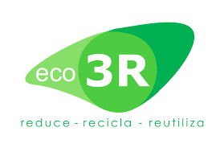
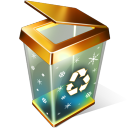

Contaminación en mi comunidad y como combatirla
Contaminación en mi comunidad
Asi esta contaminado por donde vivo

Regla de las 3R
3R


Asi esta contaminado por donde vivo
3R

La Contaminación se denomina a la presencia en el ambiente de cualquier agente químico, físico o biológico nocivos para la salud o el bienestar de la población, de la vida animal o vegetal.
Esta degradación del medio ambiente por un contaminante externo puede provocar daños en la vida cotidiana del ser humano y alterar las condiciones de supervivencia de la flora y la fauna.

1. Contaminación atmosférica
La más conocida, es el tipo de contaminación que surge de la liberación de partículas de sustancias químicas a la atmósfera. También conocida como polución, es el tipo de contaminación que afecta a través del aire. Uno de los contaminantes más conocidos en este sentido son el CO2, el metano y el humo proveniente de la combustión.
2. Contaminación del suelo y del subsuelo
Provocada por la filtración de sustancias en el suelo, genera alteraciones físicas y químicas en éste que hacen que por ejemplo resulte inhabitable, se contaminen las aguas subterráneas o se imposibilite el crecimiento de vida en el área.
3. Contaminación radiactiva
Se trata de uno de los tipos de contaminación más peligrosos y agresivos con la vida. Es producida por la liberación de material radiactivo y tiene efecto en cualquier superficie. Suele derivarse de la acción humana, como el vertido de residuos o desastres en plantas de energía nuclear como el de Chernobyl.
4. Contaminación visual
A pesar de que en principio el concepto pueda asemejarse al de la contaminación lumínica, en este caso se hace referencia a la alteración del medio en base a estímulos visuales que no tienen que ver con la luminosidad. Por ejemplo, se refiere a los cambios visuales que se producen en la naturaleza debido a la actividad humana.
5. Contaminación lumínica
Se trata de uno de los tipos de contaminación en la que el elemento contaminante es visual. la contaminación lumínica el elemento contaminante en sí es la emisión de luz fuera de lo que sería natural, provocando problemas como la pérdida de orientación o los cambios en los biorritmos tanto de seres humanos como de otros animales.
6. Contaminación acústica
Denominamos contaminación acústica a la emisión de sonido en una proporción, frecuencia, tono, volumen y ritmo excesivos que provocan una alteración en el medio o en los seres que lo habitan. Este tipo de contaminación es el que viven, por ejemplo, aquellas personas que viven en barrios muy turísticos en los que hay multitud de discotecas y establecimientos con música.
En países europeos, por ejemplo, cerca de 20.000 personas mueren cada año a causa de la contaminación ambiental. Esto se debe principalmente a la emisión de gases contaminantes tóxicos en el ambiente que causan irritación en los ojos y problemas en las vías respiratorias, además de fatigas, migradas y una serie de enfermedades cardiovasculares. ¿Cómo sucede esto? Pues bien, debido a la emisión, las partículas de humo y polvo que yacen en el aire, ingresan al cuerpo y se alojan en los pulmones, donde empiezan a producir daños graves.
Los principales afectados son los ancianos, los niños y personas que tienen problemas respiratorios, aunque, es posible que las demás personas puedan resultar igualmente afectadas. En otros casos, personas que no tienen acceso a agua potable o cocinan con estufas de combustión de carbón o leña también podrían verse afectadas.Consecuencias en el clima y el ambiente
La presencia de CO2 en la atmósfera provoca la emisión de concentraciones excesivas que aumentan las posibilidades de aparición del efecto invernadero. Además de las alteraciones que provoca en el clima con los fenómenos metereológicos, es también capaz de impedir la siembra en secciones del suelo donde residen agentes contaminados.
En el caso de las plantas, las consecuencias de la contaminación ambiental pueden reflejarse en el crecimiento y la imposibilidad de adaptación a las condiciones del ambiente, debido a los efectos negativos que produce la contaminación en el aire y el agua, agentes esenciales para sus procesos naturales. Este hecho ha permitido la desaparición de algunas plantas.
Todo el mundo habla de reciclar, ¿pero sabemos a ciencia cierta qué es, y para qué sirve reciclar? Bueno, pues hoy Esterilizados.com te explicará todo acerca del reciclaje.
Para empezar, no definamos el reciclaje, mejor veámoslo como un acto de amor al medio ambiente. Donde a través de separar adecuadamente la basura que generamos en nuestra casa, en la empresa, en la ciudad, etc. Ésta se podrá convertir en una nueva materia prima o en un producto para ser reutilizado.
Materiales como el Pet (envases de plástico), cartón, latas, podrán ser transformados alargando su ciclo de vida, y de esta forma ahorrar en materiales y ayudar al medio ambiente, no sólo a eliminar residuos, sino a combatir el desgaste de los recursos naturales de nuestro planeta.


 6
6